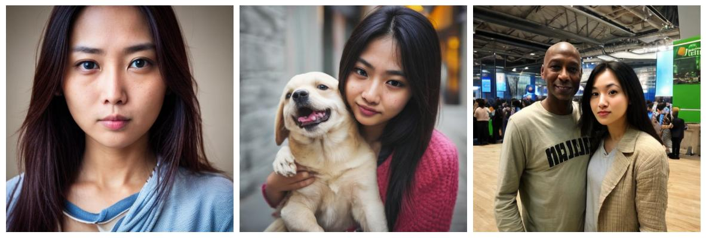

0
0
0
We investigate the space of weights spanned by a large collection of customized diffusion models. We populate this space by creating a dataset of over 60,000 models, each of which is a base model fine-tuned to insert a different person's visual identity. We model the underlying manifold of these weights as a subspace, which we term weights2weights. We demonstrate three immediate applications of this space that result in new diffusion models -- sampling, editing, and inversion. First, sampling a set of weights from this space results in a new model encoding a novel identity. Next, we find linear directions in this space corresponding to semantic edits of the identity (e.g., adding a beard), resulting in a new model with the original identity edited. Finally, we show that inverting a single image into this space encodes a realistic identity into a model, even if the input image is out of distribution (e.g., a painting). We further find that these linear properties of the diffusion model weight space extend to other visual concepts. Our results indicate that the weight space of fine-tuned diffusion models can behave as an interpretable meta-latent space producing new models.
We create a dataset of model weights where each model is fine-tuned using low-rank updates (LoRA) to encode a different instance of a broad visual concept (e.g., human identities, dog breeds, etc.). These model weights lie on a weights manifold that we further project into a lower-dimensional subspace spanned by its principal components. We term the resulting space weighst2weights (w2w), in which operations transform one set of valid subject-encoding weights into another. We train linear classifiers to find separating hyperplanes in this space for semantic attributes. These define disentangled edit directions for an identity-encoding model in weight space.
Given an identity parameterized by weights, we can manipulate attributes by traversing semantic directions in the w2w weight subspace. The edited weights result in a new model, where the subject has different attributes while still maintaining as much of the prior identity. These edits are not image-specific, and persist in appearance across different generation seeds and prompts. Additionally, as we operate on an identity weight manifold, minimal changes are made to other concepts, such as scene layout or other people. Try out the sliders below to demonstrate edits in w2w space.
By constraining a diffusion model's weights to lie in w2w space while following the standard diffusion loss, we can invert the subject (i.e., identity) from a single image into the model without overfitting. This results in a new model which encodes the subject. Typical inversion into a generative latent space projects the input onto the data (e.g., image) manifold. Similarly, we project onto the manifold of identity-encoding model weights. Projection into w2w space generalizes to unrealistic or non-human identities, distilling a realistic subject from an out-of-distribution identity. We provide examples of inversion below with a variety of input types.

Modeling the underlying manifold of subject-encoding weights allows sampling a new model that lies on it. This results in a new model that generates a novel identity that is consistent across generations. We provide examples of sampling models from w2w space below, demonstrating a variety of facial attributes, hairstyles, and contexts.

As seen from the interactive examples above, weights2weights space enables applications analogous to those of a traditional generative latent space–-inversion, editing, and sampling–-but producing model weights rather than images. With generative models such as GANs, the instance is a latent mapping to an image, whereas the instance with weights2weights is a set of identity-encoding weights.
We find that similar subspaces can be created for other visual concepts beyond human identities. For instance, we apply the weights2weights framework to models encoding different dog breeds or cars. We encourage further efforts in exploring the generality of weights2weights.
The authors would like to thank Grace Luo, Lisa Dunlap, Konpat Preechakul, Sheng-Yu Wang, Stephanie Fu, Or Patashnik, Daniel Cohen-Or, and Sergey Tulyakov for helpful discussions. AD is supported by the US Department of Energy Computational Science Graduate Fellowship. Part of the work was completed by AD as an intern with Snap Inc. YG is funded by the Google Fellowship. Additional funding came from ONR MURI.
@inproceedings{NEURIPS2024_f8536450,
author = {Dravid, Amil and Gandelsman, Yossi and Wang, Kuan-Chieh and Abdal, Rameen and Wetzstein, Gordon and Efros, Alexei and Aberman, Kfir},
booktitle = {Advances in Neural Information Processing Systems},
editor = {A. Globerson and L. Mackey and D. Belgrave and A. Fan and U. Paquet and J. Tomczak and C. Zhang},
pages = {137334--137371},
publisher = {Curran Associates, Inc.},
title = {Interpreting the Weight Space of Customized Diffusion Models},
url = {https://proceedings.neurips.cc/paper_files/paper/2024/file/f85364507054c257959c2011c28bfc0d-Paper-Conference.pdf},
volume = {37},
year = {2024}
}